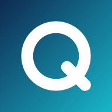

Mes Quiz
Deux applications de révision — aucune connexion requise.

🗣️ VocaLang
Vocabulaire anglais & espagnol, grammaire, verbes — révision intelligente (SRS).
▸
🛡️ CyberRévision
Cybersécurité & homologation, certifications — questions générées à la volée.
▸